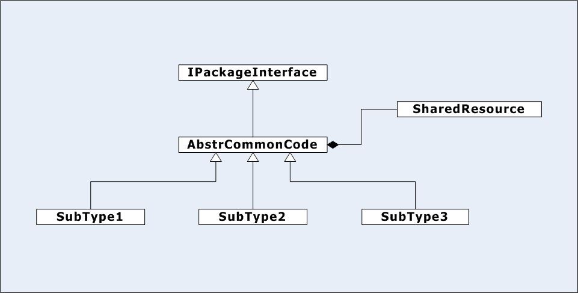

Inheritance has two main functions: 1) to support substitution of any one of a set of derived class instances, depending on the application context,
and 2) to provide in one place code and resources that are shared across all derived instances.
Any base class guarantees that code which uses a pointer or reference to the base will compile and operate with a pointer or reference
to any class that publically derives from the base.
It is important that you design the hierarchy so clients don't need to know the implementation details that distinguish
each subtype. This substitutability is the most powerful aspect of inheritance.
A base class that provides non-virtual member functions intends to provide exactly that code to each derived instance without need to define
the common operations in more than one place, e.g., just in the base. Similarly, if it declares an instance of some type, it intends to provide
copies to each derived instance, or, if the type is qualified as static, it intends to share that specific instance among all derived objects.
You find three kinds of class structures within inheritance hierarchies:

Interface, Abstract Class, and Concrete Derived Classes
-
Interface
Is a C++ class with all pure virtual functions, an empty virtual destructor, and no data members. Its purpose is to establish
a contract for services that can be implemented by any concrete derived class.
-
Abstract class
Has at least one pure virtual function which prevents clients from creating instances. Abstract classes provide common code and
sometimes common data, shared by every concrete derived class. Often an abstract class derives from an interface and defines some non-virtual
functions to be shared. It may create instances of a common data type, shown as SharedResource in the Figure, above.
If that type is qualified as static the instance is shared with all
concrete derived classes. If not, then each concrete derived class gets a copy of the same type.
Any pure virtual functions in its base must be defined by a concrete derived class. Otherwise the inherited function
remains pure virtual and the derived class is also abstract.
-
Concrete class
Must have definitions for all functions. It either inherits the definitions from a base or defines itself.
The inherited definitions may be provided by any base class, e.g., the interface or the abstract base, shown in the diagram.
When concrete derived classes are allocated on the heap it is crutial that they have a virtual destructor or the correct sequence of derived and
base destructors will not get called on destruction. If the top-most base class has a destructor explicitly declared to be virtual,
then all the destructors in the hierarchy will also
be virtual, whether they are explicitly declared to be or not.
Conclusions:
C++ classes in an inheritance hierarchy are either interfaces, abstract base classes, or concrete derived classes.
-
Interface classes provide a contract for service without binding the client to an implementation.
-
Abstract base classes support sharing of code and data resources across all concrete derived classes.
-
Publically derived concrete classes are specializations of their base type(s), providing a service unique to that class.
All of these specializations should implement the metaphor defined by their base.
-
Think of public inheritance as an "is-a" relationship between derived and base classes.